Hi my name is Tiger Ye! Currently I am an undergraduate student studying Mechatronics Engineering at the University of Waterloo. My passion is in CAD work, however I love to branch out occasionally into other fields such as programming and circuit design.
At this very moment I am in my 2A term in Mechatronics and looking for work during for the winter term. I hope that you will consider me for your company!
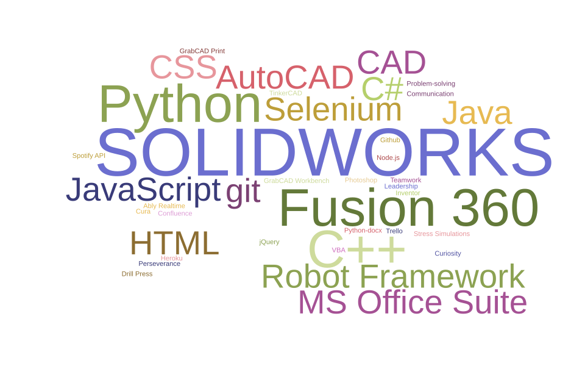
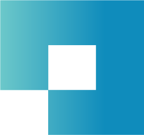
May 2021 - Aug 2021
This was my very first coop! VirtaMove is a company that creates software to migrate server applications to new cloud or datacenter servers. Their main 2 products are V-migrate, a 1 to 1 migration application and VirtaMaestro an online multi-migration application.
One of new things I learned was Robot Framework an automation framework. I programmed Robot Framework scripts for the IIS migration on V-migrate and the migration of IIS through Maestro. Additionally I was able implement alot of new features on their Maestro product. I wrote C# code to code to export backend data to csv files and pdf reports for use by users. Additionally I created the entirely new Help Center menu for user help. This included implementing links to documentation, support tickets and a page inspector tool which would show the user all the important page components and what they do.
Sep 2018 - Jun 2020
FRC has been my gateway into a variety of hands on skills such as using drill presses, band saws, milling machines and much, much more. FRC taught me how to apply the theoretical knowledge I learned in classrooms to part design and manufacturing.
My role in team 1246 (our FRC team) was overall/design lead and thus I was responsible for integrating other designers CAD models into the final design and providing tasks for members of the team. Some of my design tasks included designing the elevator, powercell (balls) storage system and the hooking mechanism for the climb.
Probably one of my proudest achievements was using Fusion 360 to design a mechanical single use hook for 2020 FRC robot. A single use hook was needed to ensure the elevator would not descend during the power off period at the end of the game. The key component of the mechanism is the spring that was used such that no electrical components were required to latch on to the elevator.
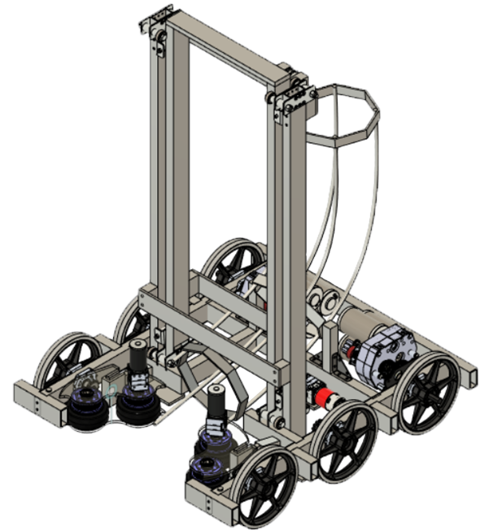
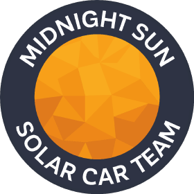
Feb 2021 - Present
Midnight Sun was the natural continuation after FRC. At Midnight Sun I am mostly involved with designing SOLIDWORKS components such as mounting hardware and snap covers for the battery box, the door handle mechanism for locking and opening the solar car and adding other miscellaneous hardware to the assembly.
Jul 2017 - Aug 2017
Over the summer of 2017 I was a maintenance worker for the Toronto Pan Am Sports Center.Some of my duties included working with senior co-workers to inspect the roof of the Pan Am Sports Centre and look for leaks or possible damages. Some days I would help out with spreading wood chips around the south-end trees. One time I even helped them excavate the ground to search for a broken wire that prevented one of the lamps from turning on.
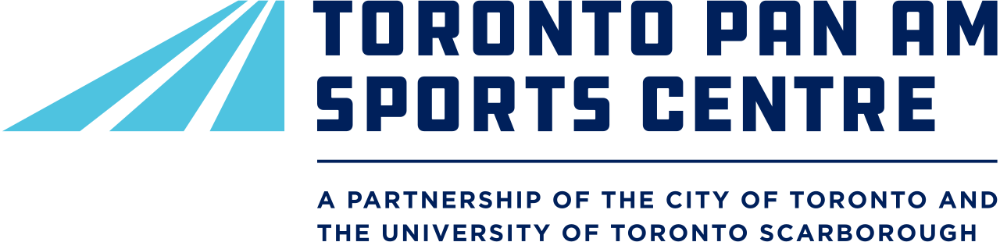
Used Solidworks form tools to design an original sleek and ergonomic computer mouse body to be 3D printed. Constraints included designing around a circuit board from a separate mouse and designing for 3D printability. The final result is the mouse I use to this day! Check out the CAD files here!
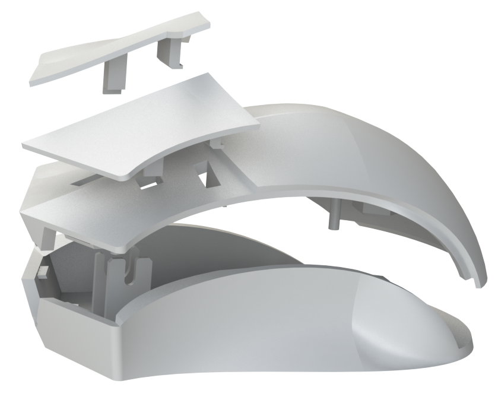
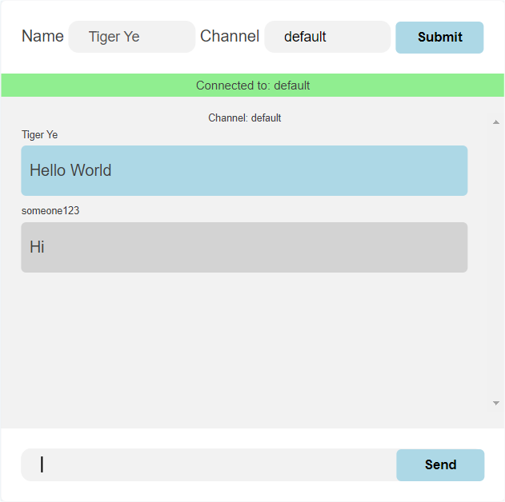
Using node.js and jQuery created an online chatroom application in which the use can input a name and channel and be directed to the specific channel. The communication between machines is done though the use of the Ably Realtime API while the application is hosted on Heroku. Check out the application here!
Used Solidworks and imported CAD models from McMaster-Carr to create a large modular conveyor assembly with sorting abilities. The conveyor was designed with the specifications of needing to transport 20x20x20cm and 10x10x30cm boxes with a max weight of 8.48kg. Check out the CAD files here!
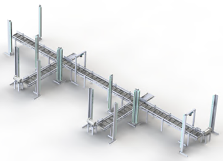
Designed a webpage that edits user uploaded images based on song choice for Hack the North. Contrast, brightness and more will be adjusted to the tone of music inputted generating a unique aesthetic for your favourite songs. Check out the code for it here!
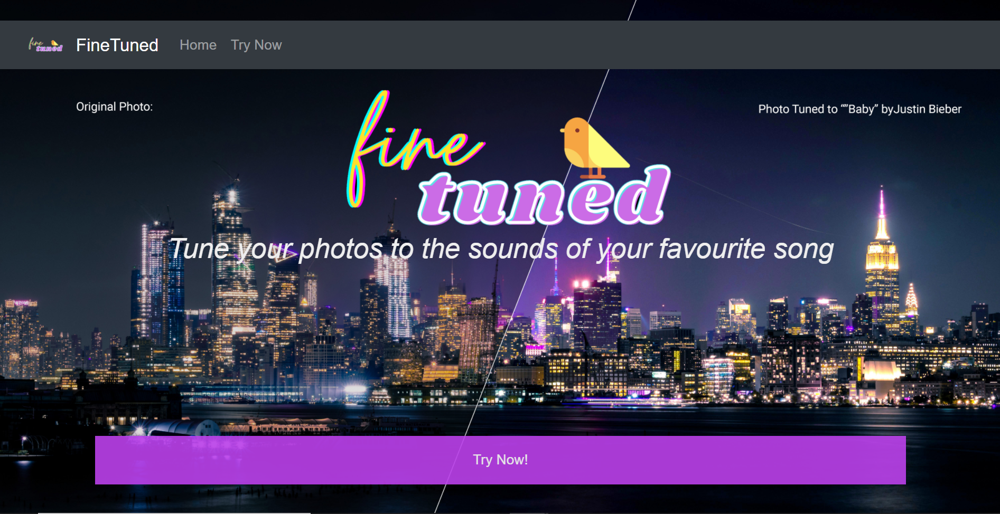
Setting up a cover letter can be tedious and time consuming leaving less time to actually express yourself through the letter. That is why I wrote a python script using Selenium that goes to WaterlooWorks and gets all the relevant information on a cover letter such as company name, postal code and more. It then uses Python-docx to write to a premade template Word document and saves it to a separate folder. Check out the code for it here!
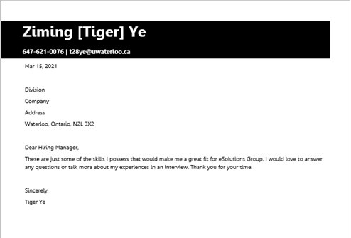
Wrote a C++ script to determine the 3 link lengths that produce the least torque of a three-degree-of-freedom (DOF) planar serial robotic manipulator arm given 3 final link positions and angle w.r.t the x-axis. The code iterated through all combinations of arm lengths from 1 to 1000 meters to find the combination that gave the least combined torque of the 3 positions. The code can be found here! And if you are really interested the report can be found here.
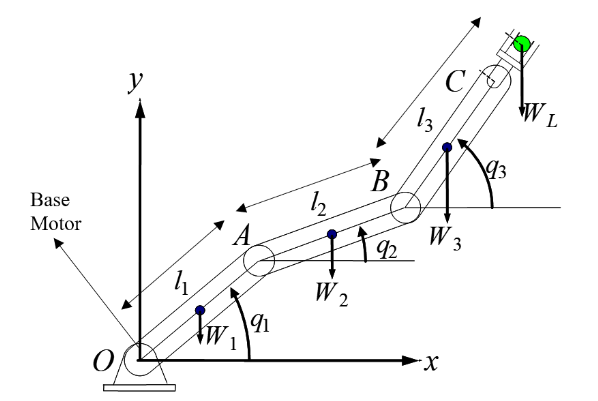
Here's just some facts about me if you want to get to know me better.